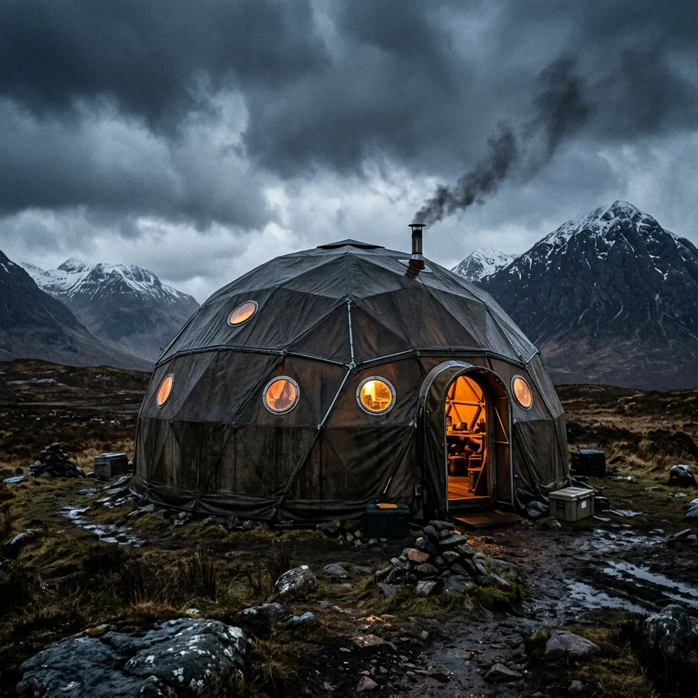
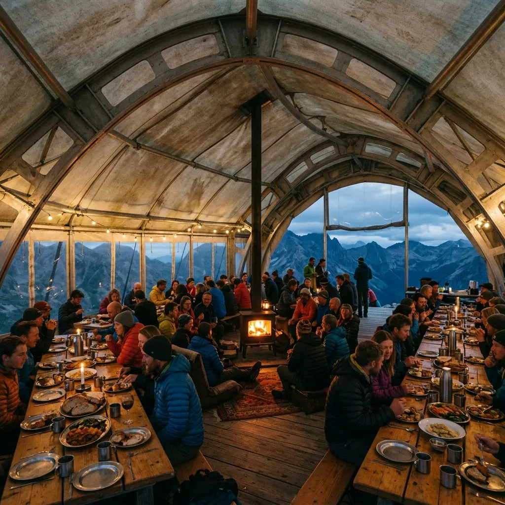
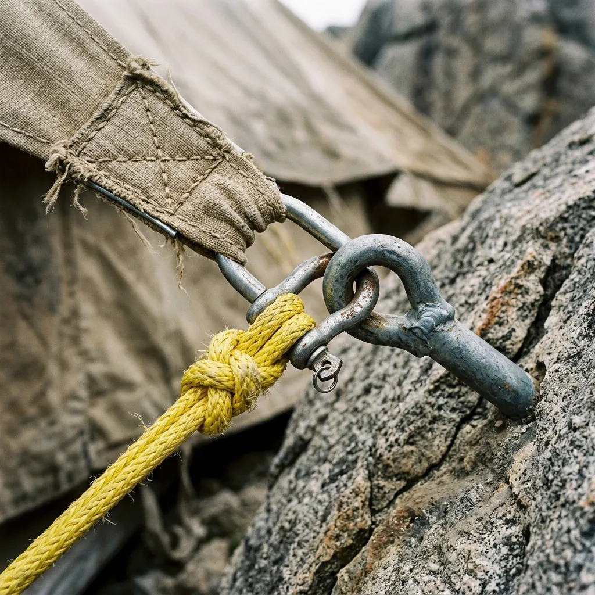
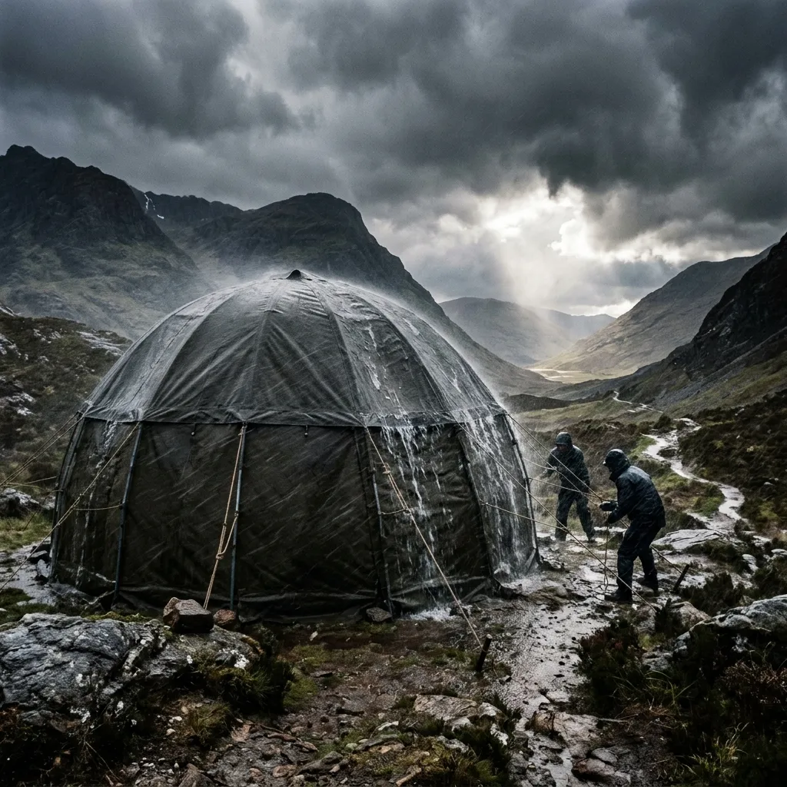
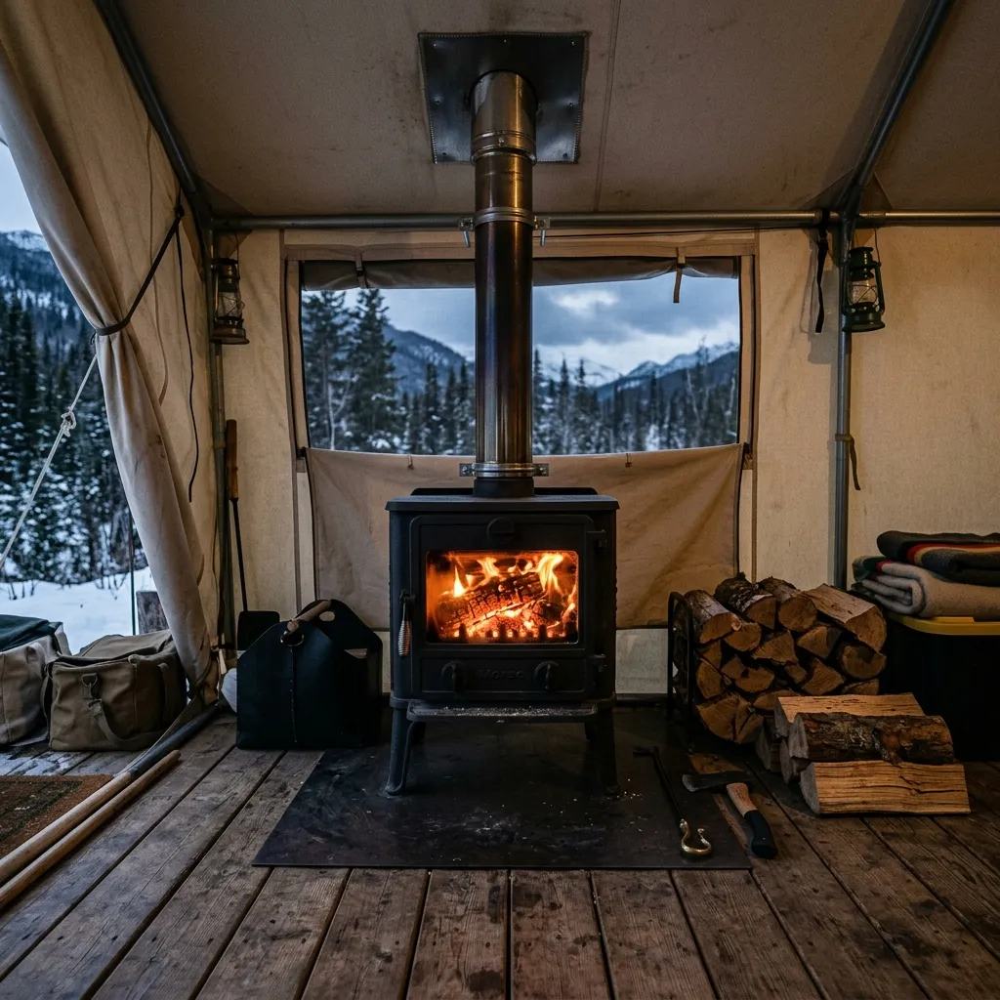
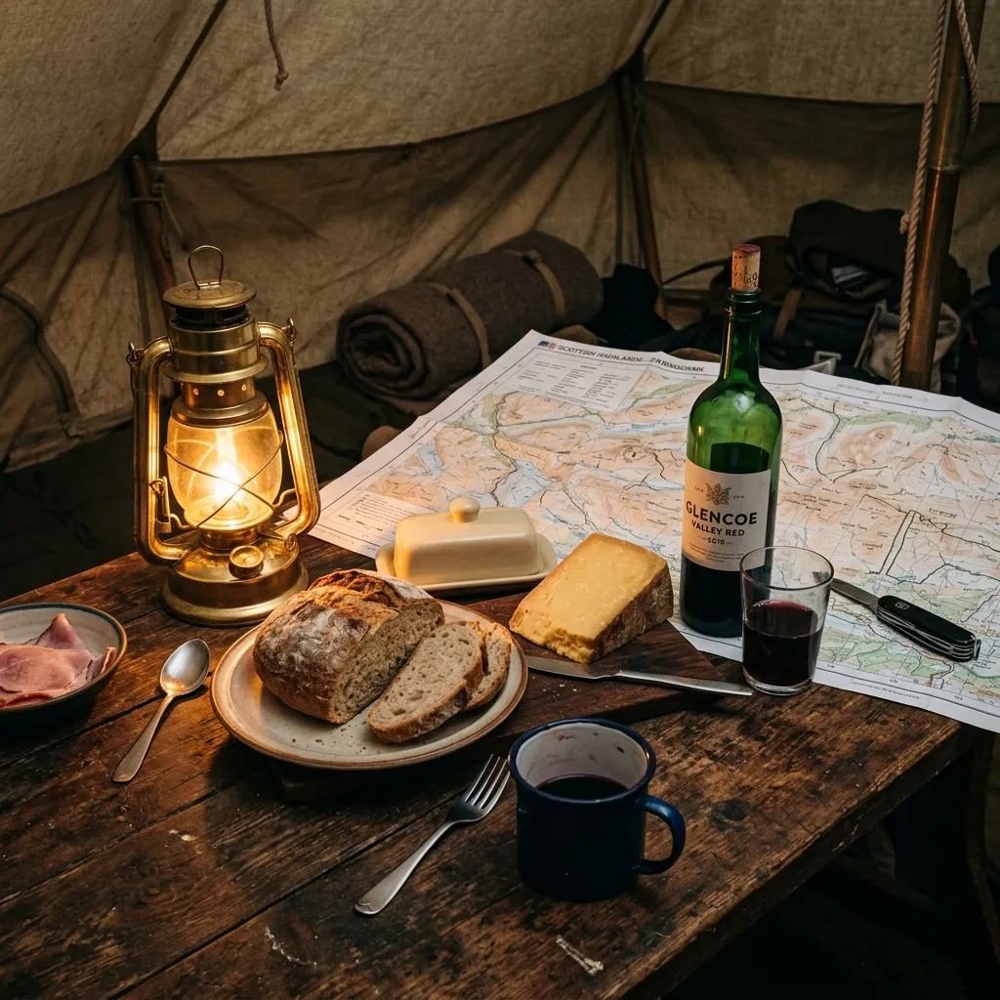

"While thirty-five solo tents were being shredded down the glen, twenty-eight of us ate roast venison inside the Great-Dome in our socks. The barometer fell off a cliff; the roof canvas barely fluttered."— Dr. Alistair MacKechnie, Highland Geology Survey

CAIRNGORM PLATEAU SQUALL:
65
KNOTS
The Antidote to the Solitary One-Man Tent.
We design and erect colossal communal storm-pavilions that transform gale-swept Highland cols into habitable banquet halls.
Outdoor gear manufacturers have spent forty years persuading sensible adults that genuine communion with the Scottish wilderness requires crawling into a damp nylon sleeve the size of a trench grave. We consider this a failure of imagination and a betrayal of civilized society. Megabivvy engineers twenty-four-metre tensioned canvas citadels that laugh at seventy-knot mountain squalls and house thirty climbers in dry, wood-heated comfort.
Requisition an Expedition Citadel
FORT WILLIAM // CAIRNGORM GREAT-DOME // 24-METRE FOOTPRINT // 65-KNOT TESTED // NO NYLON SLEEVES //
The Physics of the Colossal Canvas
When an Atlantic low-pressure system bears down on the Cairngorm plateau, small tents fail through aerodynamic flutter and anchor fatigue. A single lightweight pole bends, a guyline stretches by three percent, and the occupant spends the night wrestling wet ripstop nylon against their face. Our Great-Dome works on the opposite principle: colossal mass stabilized by monumental tension. By linking eight curved high-tensile aircraft aluminum arches across a twenty-four-metre footprint, we distribute wind shear over four hundred square metres of proofed flax canvas.
Inside, the atmosphere is utterly divorced from the gale howling thirty inches above your head. Two cast-iron wood stoves vent through double-walled silicon roof gaskets, maintaining an interior temperature of eighteen degrees Celsius while snow drifts against the exterior storm valances. You do not rehydrate freeze-dried stew in a pouch with a plastic spork; you sit at an eight-metre trestle table on dry spruce decking, drink claret, and listen to fifty-knot gusts slide harmlessly over five tonnes of tensioned Scottish canvas.
The Structural Roster
Forget flimsy weekend domes. These are semi-permanent mountain palaces designed to withstand sustained punishment in the harshest regions of the Scottish Highlands.
The Col Ridge-Pavilion
18-Metre Span // 1.8 Tonnes Rigged // Footprint: 180 m²
Designed for narrow mountain cols and rocky saddles where space is a premium. The aerodynamic barrel-vault profile sheds crosswinds with exceptional efficiency. Seats twenty-four climbers in the central commons, flanked by two internal sleeping wings outfitted with raised timber platforms to isolate you from the frozen earth.
The Cairngorm Great-Dome
24-Metre Span // 3.2 Tonnes Rigged // Footprint: 400 m²
Our flagship structure. An eight-rib geodesic hemispherical dome with a central hearth pit, certified for sustained 65-knot winds. It comfortably accommodates forty bunks or a sixty-person banquet layout. This is not a shelter; it is a fortified conclave that transforms the most hostile environment on the island into a civilized refuge.

The Fell Conclave
32-Metre Mega-Structure // 5.4 Tonnes Rigged // Footprint: 750 m²
A multi-bay tensile citadel explicitly designed for month-long scientific expeditions or mountain festivals. Features internal partition bulkheads, a drying room airlock for sodden gear, and a full commercial galley kitchen gantry. When you require a basecamp that functions with the reliability of a concrete bunker, you requisition the Conclave.
FORCE 11 STRESS READOUT // LATERAL GUST DEFLECTION //
FORCE 11 STRESS READOUT // LATERAL GUST DEFLECTION //



Deconstructing the Monolith
True storm survival is an engineering problem solved by physics, tension, and massive anchor points.
01: The Aluminum Skeleton
Constructed from 7075-T6 aircraft aluminum arches fitted with internal hydraulic tensioners. There is zero flex under lateral gusting. Ground earth-screws are driven a full 1.5 metres into mountain scree, anchoring the frame irrevocably to the bedrock.
02: The Flax Membrane
A staggering 450 gsm Scottish-woven dry-finish flax canvas. Natural fibers swell upon contact with precipitation to create an impermeable, water-tight seal without the need for degrading plastic coatings. Zero condensation drip. It breathes as you do.
03: The Hearth & Flue Systems
Equipped with twin 8 kW cast-iron stoves featuring spark-arresting flue chimneys. Specialized underfloor intake channels draw cold external air directly to the combustion chamber, ensuring a roaring fire without drafts stealing the interior warmth.
Field Despatches // The Sane Mountaineer
Shivering in solitary nylon is a choice, and an uneducated one. We prefer empirical evidence over masochistic suffering.
"Mobilized the Col Ridge-Pavilion as a forward warming hub; treated eight cases of exposure around the wood stove without touching a sleeping bag."— Fiona Lochhead, Glencoe Mountain Rescue
"Three days trapped in a whiteout; completed two grant proposals at the library table while the kettle simmered continuously."— Hamish Campbell, Arctic Flora Trust
0 gale missions staged;
0 collective bed-nights in Scottish Force 10 conditions;
0 structural evacuations.

Inquiries from the Ultralight Faction
How am I supposed to carry a three-tonne tent on my back?
You do not. You hire our Highland pony team, charter a Pinzgauer 6x6, or split the logistics net with thirty fellow mountaineers. The obsession with carrying everything alone is an Anglo-American neurosis.
Isn't natural flax canvas prone to mildew?
Only if packed wet by barbarians. Our canvas is treated with organic wax emulsions and naturally breathes; unlike nylon, it does not weep condensation onto your forehead at 3:00 AM.
How does the structure handle Scottish gale gusts exceeding 80 knots?
Through mass, parabolic tension curves, and heavy ground-helical augers. While a two-man tent takes flight like a plastic bag, five tonnes of tensioned flax simply tightens its grip.
Do we need building permission to pitch a Megabivvy?
Under Scottish Land Reform access rights, temporary expedition shelters require no planning consent. We arrive, we dine, we sleep, and we vanish without leaving a scorched grass ring.
Can we burn peat in the stoves?
Seasoned hardwood or smokeless compressed briquettes only. We seek civilized warmth, not an eighteenth-century croft smokehouse.
Commission an Expedition Citadel
Book your structure and rigging crew before winter squalls close the high passes. Site scouting and ground-auger depth testing required four weeks prior to assembly.